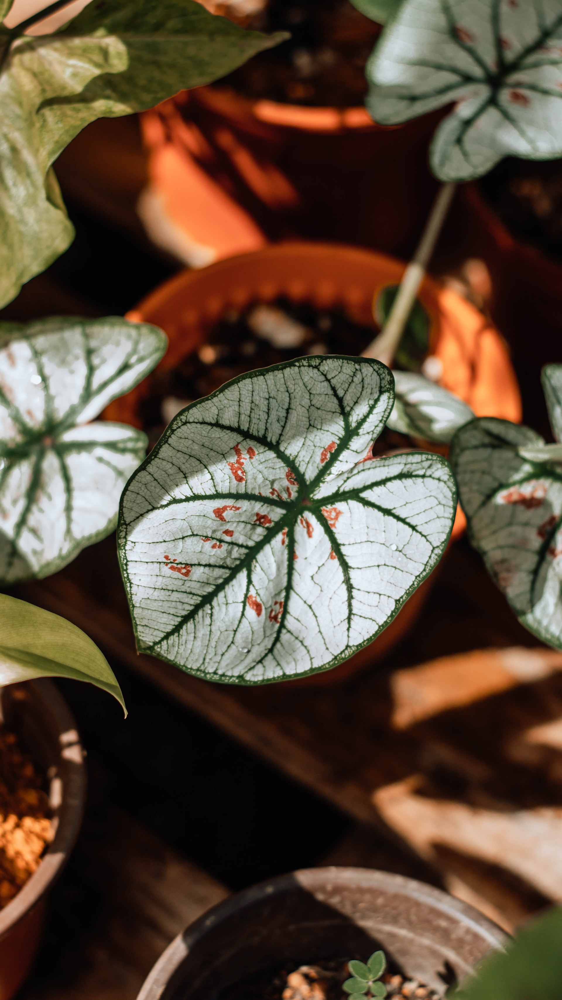

그리고 또 나는 운동을 좋아해 하지만 지금은 다리가 아파서 운동을 하지 못하고 있어 얼른 나아서 또 달리고 싶어 축축하고 습한 날씨에 달리는건 정말 행복한 일이거든! 사실 나는 습한 날씨를 좋아하지 않았지만, 식물을 키우면서 습한 날씨를 정말 좋아하게 되었어! 왜냐하면, 우리집에 사는 식물들은 열대식물들이라 습한 날씨를 정말 좋아해서 여름에 잘 자라거든!

이 식물은 칼라디움이라는 식물이야. 내가 가장 좋아하는 여름 식물이고, 실제 우리집 식물은 아니지만 보여주고 싶어서 사진을 가져왔어!